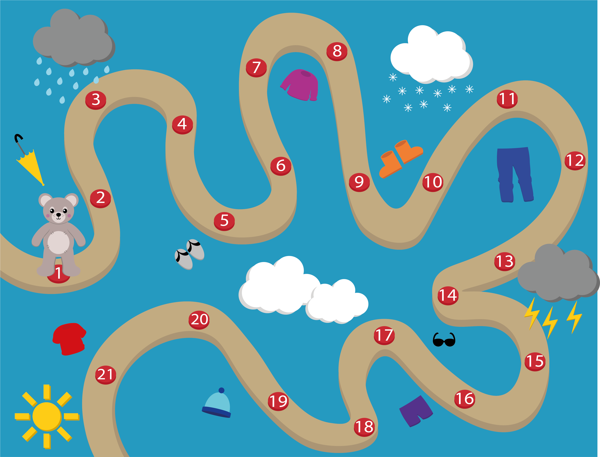
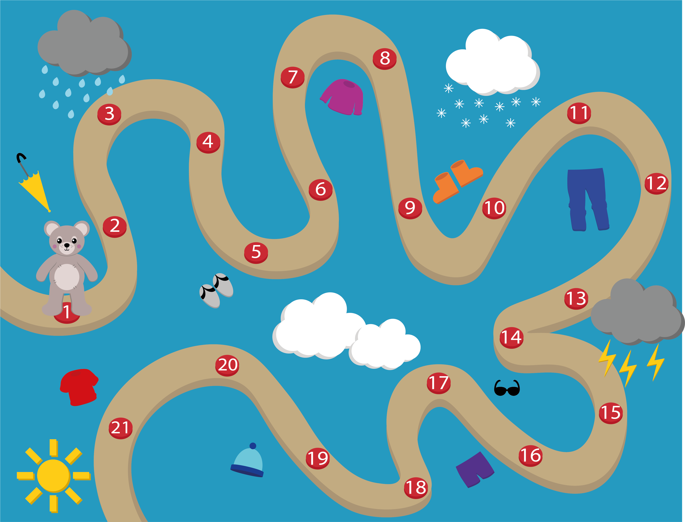

Gennem uddannelsen har jeg haft forskellige projekter, hvor jeg har arbejdet med løsninger,
alt efter den givet problemstilling. På denne side kan du finde et par stykker af dem.
Til dette projekt blev jeg bedt om at udvælge en flyer som jeg skulle lave om til en hjemmeside, samt bruge den til inspiration for indhold til to andre medieplatforme. Jeg valgte en flyer fra min lokale biograf, Scala Svendborg. Flyeren viste den kommende uges program af film, men siden det bare var en flyer, blev den uoverskuelig.
Min opgave lå i at skabe en hjemmeside som viste den kommende uges forestillinger, samt skabe indhold til to andre medier. Jeg valgte at skabe en instagram, samt en trailer til biografen. Jeg skabte otte hypotetiske film, med billeder fra splash, som jeg redigerede i illustrator. Jeg gav filmene et navn, tilføjede et par hypotetiske skuespiller, samt et plot.
Derefter satte jeg hjemmesiden op, som skulle give et hurtigt og nemt overblik over den kommende uge. Farvepaletten var inspireret af Scala's egen hjemmeside. Jeg skabte et logo, som jeg animerede og brugte til en velkomst. Siden er også responsiv som krævede en del kodning for at sørge for det hele tiden så pænt og overskueligt ud.
Jeg lavede instagrammen for at vise hvordan Scala ville kunne bruge den til at lave reklame for ugens nye store film. Traileren er bygget og animeret i Cinema 4D, hvor jeg skabte en biografsal som stablede sig selv på benene. Jeg brugte lyset til at skabe en effekt af at lyset i salen gik ned og filmen gik i gang.
Du kan se hjemmesiden
her
Du kan se traileren her
Instagram:


Til et andet projekt skulle vi som gruppe lave en vejrapp for børn. Meningen var at det skulle være sjovt for børn og give dem lyst til at se hvordan vejret ville blive, samt lære hvad for noget tøj der passer til det gældende vejr. Den givet målgruppe var 3-6 årige, men vi valgte at forkusere på de 3-4 årige, da det var for bred en målgruppe at arbejde med. Tanken var at vi ville lave en hurtigt oversigt til de tidspunkter hvor der ikke er så meget tid, men et længere spil til de tidspunkter hvor der er tid til at udforske vejret. Vi ville skabe karaktere som barnet selv ville kunne vælge imellem, for at skabe en forbindelse mellem dem. Via gamification skabte vi et valg for barnet, hvor det er meningen barnet skal vælge hvad passer til vejret. Ved hjælp af forbindelse mellem barn og karakter, vil det være muligt at overbevise barnet om hvilket tøj der er det rigtige at have på, ved at sammenligne med karakteren. Via appen er det også muligt for barnet at lære omkring vejret. Vi lavede en passende loading skærm i tilfælde af appen skulle loade. Jeg animerede skyen for at den ville passe bedre til børn.
Du kan se prototypen
her
 

Som afslutningsopgave på 2. semester, skulle vi skabe et koncept til det kommende Flygtninge Museum i Oskbøl. Muséet er bygget op om den gamle flygtningelejr der lå i Oksbøl under 2. verdens krig. Lejren blev til et mindre samfund i tiden efter krigen, som blev det største flygtninge samfund i Danmark. Muséet kommer til at ligge i det oprindelige område, og selve arealet af lejren er vedligeholdt. Opgaven lå i at skabe et koncept til at få de besøgende til muséet til at udforske naturområdet som hørte til lejren. Det endelige koncept består af en app som inderholder en quiz den besøgende kan tage med rundt og teste den viden de kan finde undervejs. Tanken med den er at der er forskellige længder af ruter, så alle kan være med uanset hvor langt de kan gå. Via denne quiz er det også muligt at sætte premier på højkant eller muséet kan lave højtidelige events eller bare ændre spørgsmålene, så der er noget at komme tilbage efter. I forbindelse med denne app har jeg fokuseret på kodningen af selve quizsiden. Den er bygget op med HTML og CSS, og der er brugt Javascript til at skifte mellem kortet og spørgsmål, samt holde styr på hvor mange spørgsmål der er svaret rigtigt på og hvilke spørgsmål der er svaret på.
Du kan se prototypen
her
(For at se denne prototype optimalt, skal der skiftes til mobilvisning via F12)